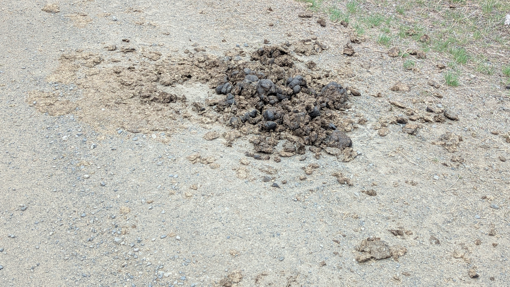

ope...a life
Ochoco National Forest / Wild Horses: Oregon
Thought it'd be nifty to see wild horses. Always imagined them running in herds on the open plains. Seeing them in the forest was unexpected, but duh, it's a national forest.
Ochoco National Forest was beautiful and looked much different than the forests in the Midwest and the Oregon Coast.
Thought we'd have to drive deep into the forest to see some horses, so we took some interesting roads.
Turns out you only have to stay on the main paved road to see them.

And, there are other ways to know you're on the right track.
We found where the antelope play, as well.
This fella seemed lost but perfectly content where he was.
We saw three different groups of horses. Around three dozen horses in all.

A horse skeleton by the side of the road.
Apparently, Crows Love Luxurious Ant Baths.
Photographer Tony Austin knew he had gotten lucky when a murder of crows landed near him on a recent nature walk. But then one of the birds started acting strangely. Austin started shooting — and he was astounded later, when he enlarged his photos: The crow had large black ants all over its body.
A leading theory is that it's all about cleanliness.
"Ants have defensive secretions, chemical weapons they use to fight off other insects and fungi, so if you smear what they've got all over your feathers, you're stealing their fungicides, miticides, insecticides and biocides," as Robert Krulwich reported for NPR.